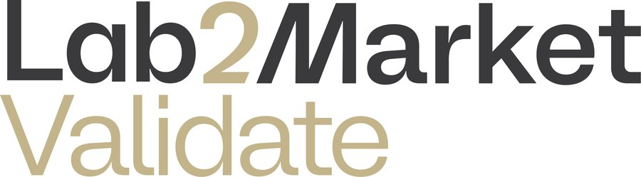

Aug 2025 – Dec 2025
Entrepreneur Lead: Lab2Market Validation Program
North Forge Startup Incubator, Canada (Remote)
- Led translational validation of yttria-stabilized zirconia (Y-TZP) for dental and biomedical applications, bridging materials research with clinical and industrial requirements.
- Evaluated material–process–property relationships across zirconia additive manufacturing routes (vat photopolymerization, binder jetting, LPBF, DED), including effects of yttria content, sintering temperature, densification, shrinkage, and fracture behavior.
- Assessed technical readiness, scalability, and cost drivers of zirconia AM processes by integrating sensor data analytics, thermometry, and large-dataset handling to analyze thermal histories, phase stability, microstructure evolution, and mechanical performance.
- Translated stakeholder and end-user requirements into data-driven process selection criteria and early commercialization pathways, guiding future experimental prototyping and validation.